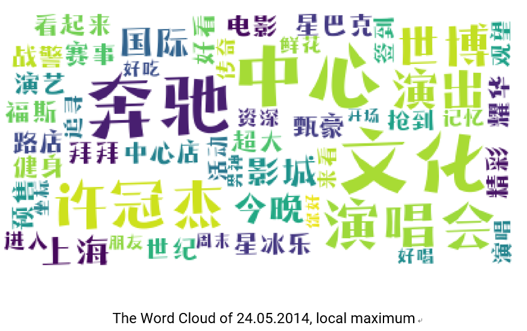

Abstract
The emergence of social media provides a new source of sensing society. In this thesis, a novel event detection method for detecting real-world events based on population sentiment orientation (PSO) from social media check-in data is proposed. The method is mainly composed of sentiment analysis, spatial-temporal analysis, and event extraction.
The hypothesis guiding this research is that social events change PSO in the dimension of time and space. The ratio of the number of positive and negative records is chosen to indicate the PSO within a specified period and geographical area. First, different sentiment classification methods are compared and a sentiment classification model is trained. Second, spatial-temporal analysis empowers the method to detect multi-scale events in terms of time and space dimension. Specifically, the method can detect events from nationwide festivals to local activities and from annual-scale to day-scale. Furthermore, time series analysis and spatial clustering can interpret the social phenomenon of the event by mining spatial-temporal patterns. At last, A Word Cloud is used to visualize the extracted high-frequency event keywords for visually identifying the event.
For testing the method, a case study is conducted using Sina Weibo data in Shanghai, China, 2014. Events such as Chinese New Year, Mid-Autumn Festival and concerts have been successfully detected. Besides, the interpretation ability of this method is also tested. Main reasons for negative microblogs on the New Year’s Eve are successfully extracted. Traffic as one of the biggest reasons from the result, the spatial pattern of it has been discovered. Related microblogs are mainly distributed at sites of public transportation like Shanghai Pudong international airport or railway station.
Keywords: Spatial-temporal analysis, Event detection, Social media, Sentiment analysis, Machine learning, Data mining.
1. Sentiment Analysis
1.1 Lexicon-based Classification

Lexicon-based method evaluation:

1.2 Machine learning-based Classification
Segmentation
The Jieba Python library is used in this study.
Vectorization
By now, all the sentences can be accurately segmented. The next step is converting all words into vectors. In this thesis, the Word2vec model is applied. Gensim, A Natural Language Processing Python library (Řehůřek, 2009) offers word2vec algorithms.
Machine learning-based method evaluation

1.3 Classification Result
The best result comes from the Logistic Regression Classifier. So after applying the already-trained classification on the whole data set, the result shows below.

1.4 Sentiment Indicator
In this thesis, the ratio of the number of positive and negative records to indicate the population sentiment orientation within a certain period of time and specified geographical area is used. The author names this indicator Population Sentiment Orientation (PSO). The equation is written as below:

2. Spatial-temporal analysis-based event detection
Spatial-temporal analysis of population sentiment orientation in this study helps to determine the time, and geographical distribution of the happened social events and the word cloud technique is used for specifically visual detect what the exact event is.
Events Detection
The hypothesis of time series analysis of this study is that the global or local maxima or minima of the population sentiment orientation of the time series can indicating social events. For testing this hypothesis, the case study is designed and implemented as follows. First, the whole year (minimum unit is one single day) and entire Shanghai region data to detect city-scale event happened in a day of the entire year has been used. The time series plot is shown below.

In the plot, the time-series display the tendency of PSO, and in general, the PSO score is below 1.0 which is in line with common sense that people complain and express negative opinions more often in Social media.
The local minima and maxima are very quickly visual detected from the plot. Therefore, the top 3 maxima points have been picked to verify the experimental hypothesis:
(1) 18.02.2015
(2) 08.09.2014
(3) 30.01.2014
Corresponding Word Clouds of the detected events

The keywords translation in the word clouds above
The results verify the correctness of the hypothesis:
1. The local maxima or minima of the POS time series can be used as a social event indicator.
2. Abnormal population sentiment orientation value is very likely to indicate social events.
3. Word Cloud-based visual event detection method is intuitive and effective.
Small temporal scale event detection
As previously stated, this is a multi-scale spatial-temporal analysis event detection method. The time series analysis above is an annual analysis on a daily basis, so only the date of the event can be detected. In order to detect the effectiveness of this method on a fine-grained small scale data, a time series analysis of PSO on the New Year’s Eve of 2014 is conducted and the plot is drawn in the figure below.
From the plot, we can see that the PSO value starts going up from around 4 pm and reaches the maximum value around 8 pm. It means that people’s celebrations were mainly concentrated during this time. This result of this experiment is in line with common sense that people start preparing the dinner around 4 pm and the Spring Festival Gala begins at 8 pm every year which makes the PSO reach the peak and gradually falling after that.
Small spatial scale local event detection
The spatial-temporal analysis based event detection method of this study is supposed to be spatial multi-scale. The Mercedes-Benz Arena has been selected, a representative spot in Shanghai, formerly known as the Shanghai World Expo Cultural Center as a case study of local event detection.
the PSO time series plot of Mercedes-Benz Arena, 2014.
The top 3 maxima point are:
(1) 11.01.2014
(2) 24.05.2014
(3) 21.02.2014
The minimum point is:
(1) 11.05.2014
Corresponding Word Clouds of the detected events

From the keywords in the Word Cloud, we can know what happened and what the event was.
On 11.01.2014, there must be a concert, and in the Word Cloud, there is a singer called “Dingding”. The author looked it up and proved that on 11.01.2014, famous singers Dinging Sa and Yu Qi held a concert at Mercedes-Benz Arena Shanghai.
Similarly, Guanjie Xu held a concert on 24.05.2014, and Avril Lavigne held a show on 21.02.2014.
To sum up, in this subchapter some experiments and case studies to verify the effectiveness of the sentiment-based spatial-temporal event detection method has been done. Furthermore, this method can work on multi-scale spatial-temporal events. It will be demonstrated and explained in the next subchapter how this method also be used for interpreting social phenomenon.
3. Spatial-temporal analysis-based event interpretation
The spatial-temporal analysis-based method of this study covers not only social event detection but also support social phenomenon mining and interpretation.
Taking the New Year’s Eve of 2014 as an example, the time series plot has shown that the PSO reaches a maximum.
Therefore, it should be possible to explore what the unhappy people are complaining about and what the adverse events are.
For detecting negative events, the Word Cloud based on only negative sentiment microblogs has been gathered. Figure below shows the result.
The keywords in the Word Cloud are: “Working”, “Come back home”, “No”, “cannot”, “Airport”, ”This year”, “Outside”, “Off work”, “Airplane”, “Train station”, “Subway station”, etc.
We can infer that some people are complaining that they are still working, some people are complaining that they haven’t returned home yet, and some are complaining about the traffic.
Many traffic-related words are in the Word Cloud such as “Air Plane”, “Train station”, “subway station” and ”Airport”.
As an example, for people who were complaining about the traffic, a spatial clustering analysis on these microblogs has been performed trying to discover the geographical distribution patterns.
Spatial clustering analysis
To deeply mining the spatial pattern, DBSCAN is applied to the data set based on the haversine formula (distance metric).
Figure below is a small multiple showing the clustering results with different parameter combination. The best clustering result can be visually judged.
The X and Y axes are representing the geographical coordinates system.
The title of each subplot is the cluster number, the parameters (Epsilon and Min_sample). The different color of the points in the plot represents a different cluster. The range of the Epsilon is from 0.5 km to 1.5 km, and the scope of the Min_sample is from 5 to 15.
From the plot, we can see that there are roughly three clusters. With the 1 km Epsilon and 15 Min_sample, the algorithm returns 3 cluster, and the clustering effect seems relatively good compared with others. Therefore, the three clusters have been placed on a map to see the spatial patterns.
Figures below are the map and the zoomed-in maps of each cluster.
With additional geographical information on the Open Street Map base map, from the figures above we can see that the first cluster is Shanghai Hongqiao International Airport and railway station region. The second cluster is Shanghai railway station region, and the third cluster is Shanghai Pudong International Airport.
4. Conclusion
The main innovation of this thesis is a new approach of event detection which combines sentiment analysis and spatial-temporal analysis. Moreover, this method also has the ability of event interpretation.
In the thesis, the hypotheses have been verified and the research questions have been answered through experiments. Finally, the conclusions can be summarized as follows:
1. Population sentiment orientation (PSO) can be used to detect events in the dimension of time and space. This further proves the validity of the fundamental hypothesis of this thesis that social events change PSO.
2. The ratio of positive and negative records of the social media can serve as an indicator for PSO.
3. This event detection method can successfully detect multi-scale events. From nationwide festival to local activity and from annual-scale to day-scale detection, the method works pretty well.
4. In general, the extrema of the time series of PSO most likely represent social events. Therefore, social events can be visually detected by the time series plot.
5. This method can also be used to interpret events. Specifically, spatial-temporal analysis of this method can help mining spatial-temporal patterns of the event.
6. From the experimental results, overall, the machine learning-based sentiment classification is better than the lexicon-based sentiment classification in terms of the given Weibo data set.
7. Spatial-temporal analysis in this thesis mainly contains time-space scale transformation, time series analysis and clustering analysis.
8. Unlike event detection for specific events, this sentiment-based event detection method does not require related keywords training set, so it can detect wider types of events.
Download thesis poster
Download thesis slides
Visit the project on my github
- October, 2019